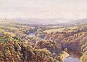
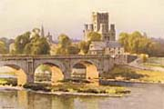
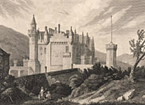

|
|
Home | Corson
Collection | Biography | Works | Image
Collection | Recent Publications | Portraits | Correspondence | Forthcoming
Events | E-texts | Contact

|
Links for
Places Associated with Scott
|
|

|
For the
moment, this page lists only links which specifically discuss Scott's
relationship with the place in question. It will eventually be
expanded to include more general pages on places with Scott associations.
-
-
-
-
-
1. General
The follow pages deal with more than one category
of sites associated with Scott:
- EdinPhoto:
The History of Photography - Peter Stubbs's site charting
the history of photography in Edinburgh provides many nineteenth-century
images of the Scott Monument and of Scott's homes at
25 George Square, 39 North Castle Street, and Lasswade.
- Literary
Locales - Sponsored by San
Jose State University's Department of English, this
page provides weblinks to places that figure in the lives
and writings of famous authors including the following
Scott-related locales: Abbotsford,
Ashby Castle, Durham Cathedral, Egglestone Abbey, Kenilworth,
Loch Katrine, Lochinvar, and Peveril Castle.
Back to top
2.
Homes and Haunts
The 'Scott Country' | Abbotsford | Bowhill | Edinburgh | Gilsland | Kelso | Melrose | Selkirk | Smailholm
The
'Scott Country'
- Save Scott's Countryside -
Home page for a non-profit-making organisation opposed to development
of Sir Walter Scott's lands between Abbotsford and
Melrose. The site features a discussion of the planning issues,
photographs of sites under consideration for development, news
and events pages.
- Sir
Walter Scott@VisitBritain - From the tourist information
site VisitBritain,
a guide to the 'Scott Country' with suggested routes.
- Sir
Walter Scott by Fred Gordon - From Worldisround,
photographs of Kelso, Abbotsford,
and Dryburgh Abbey.
- The Sir
Walter Scott Way - An illustrated guide to the Sir Walter
Scott Way, a 92 mile/148 kilometre cross-country walk from
Moffat in South Central Scotland to Cockburnspath on the
South East Scottish Coastline. It provides biographical and
historical information on Scott's homes and
haunts (with excellent recent photographs) together with
details of facilities for walkers and other visitors.
Back to Homes and Haunts
Abbotsford
- Abbotsford:
The Home of Sir Walter Scott - Official home page for
Abbotsford House, providing a brief biography, a history
of the house, pages on the Chapel, gardens, and grounds,
and full visitor information. For more information on Abbotsford,
visit the Homes page
on this site.
- Abbotsford & Sir
Walter Scott - From Scottish
Towns, a biographical page on Scott, highlighting his
love of the Border Country and linking to a page on Abbotsford.
The site contains numerous entries to towns with Scott connections.
- Images
of Abbotsford - From Potter's
House, this page features photographs, paintings, and
sketches of Abbotsford.
- Scottish
Notable Houses: Abbotsford - From The
Heritage Trail, this page provides a concise history
and description of the Abbotsford house and estate.
- Sir
Walter Scott: Abbotsford House - From Dandie
Online, a site devoted to the Dandie Dinmont Terrier,
an amply illustrated German-language record of a visit to
Abbotsford House and Park,
which also discusses the character of Dandie Dinmont in Guy
Mannering.
- Victoria's
Highland Journals - Part of a dossier on the film Mrs
Brown presented by ExxonMobil
Masterpiece Theatre, this extract from Queen Victoria's
journal describes a visit to Melrose and Abbotsford. The
dossier also includes an essay by Howard Cutler on Victoria's
Life in the Highlands which discusses her lifelong passion
for Scott.
Back to Homes and Haunts
Bowhill
- Bowhill
House and Country Park - An entry from Information
Britain on the principal seat of the Dukes of Buccleuch
(Scott's feudal patrons), evoked as 'Sweet Bowhill' in The
Lay of the Last Minstrel. The 'Scott Room' contains
the manuscript of the Lay, several historical proof
editions, and Scott's plaid. The entry includes a description
of the important art collection, opening times, admission
charges, and directions.
Back to Homes and
Haunts
Edinburgh
- Homes
of Sir Walter Scott in Edinburgh - From Astoft,
A. Soedring's site devoted to British and Danish architecture,
this page contains photographs of Scott's surviving homes
at 25 George Square, 10 South Castle Street, 39 North Castle
Street, and 3 Walker Street, together with images of Old
College (built on the site of Scott's birthplace in College
Wynd) and the Old High School. The images are accompanied
by brief extracts from Pevsner Architectural Guides:
Edinburgh (1991) and from Scott's Journal.
Back to Homes and Haunts
Gilsland
- The
Popping Stone, Gilsland, Cumbria - Part of local historian
Will Higgs's local history site Laverocks,
this page contains a discussion of the local tradition that
Scott proposed to his wife Charlotte Carpenter at the 'Popping
Stone', a boulder formation in the grounds of the Gilsland
Spa Hotel (formerly the Shaws Hotel). It concludes that Scott
may well have been attracted to folklore surrounding the
stone but that the naming of the stone predates its association
with Scott. There are links to images of the Popping Stone
(both historical and contemporary), to further Gilsland sites
and to an e-text of The
Bridal of Triermain, which some think contains reminiscences
of Scott's courtship of his wife. See Williamina,
Charlotte and Marriage for more on Scott and Charlotte
Carpenter.
- South
Tynedale: Alston to Haltwhistle - From David Simpson's North
East England History Pages, this page has a paragraph
'Sir Walter and the Wall' describing Scott's courtship of
Charlotte Carpenter at Gilsland and including the text of
Scott's 'To a Lady, with Flowers from the Roman Wall'.
Back to Homes and
Haunts
Kelso
Back to Homes and
Haunts
Melrose
Back to Homes and
Haunts
Selkirk
- Scott's Selkirk -
Website for a festival held annually on the first weekend in
December, celebrating Scott's connection with Selkirk. For
details of the 2006 festival, see Recent
Events. For Scott's work as Sheriff-Depute of Selkirkshire
see Professional Life.
Back to Homes and
Haunts
Smailholm
- Smailholm
Tower - From the visitor information site Discover
the Borders, a page on the fifteenth-century tower house
on the grounds of Sandyknowe Farm. Discusses Scott's connections
with Sandyknowe which belonged to Scott's grand-parents Robert
and Barbara Scott and where he spent much of his infancy
(see Sandyknowe and Early
Childhood). In addition to directions and information
on opening hours, admission charges, and facilities, the
page contains images of a display of dolls housed in the
Tower illustrating scenes from Scott's poems.
- Smailholm
Tower - From Clan
Pringle, a page, with many photographs, on the fifteenth-century
tower built by the Pringle family. It lists Scott's connections
with the Tower, which he knew from his childhood stay at
Sandyknowe and used as a setting in Marmion and
'The Eve of St. John'.
- Pringles
of Whitsome and Smailholm - From Tom
Paterson's Scottish Roots, this extract from William
Anderson's The Scottish Nation (1863) discusses
Scott's associations with Smailholm Tower which was built
by Robert Pringle at the beginning of the fifteenth century.
It goes on to quote Scott's discussion, in Chapter 1 of The
Monastery, of a bridge built over the Tweed by Sir
John Pringle.
Back to Homes and
Haunts
Back to top
3.
Monuments and Museums
General | Dryburgh | Edinburgh | Glasgow | New York | Philadelphia | Rome
General
Dryburgh
Edinburgh
-
The
Writers' Museum - Located within the seventeenth-century
Lady Stair’s House, the Writers' Museum is dedicated
to the lives and work of Scotland’s great literary
figures, laying particular emphasis on Scott, Robert Burns,
and Robert Louis Stevenson. The rich collection of manuscripts,
first editions and portraits is complemented by a series
of personal exhibits, including Scott's chessboard and dining
table, together with the press on which many of the Waverley
Novels were printed.
- The
Scott Monument Virtual Tour - A virtual tour of the Scott
Monument in Edinburgh with copiously illustrated pages on
Scott's life and works, on the history of the Monument, and
on the sixty-four statues of characters from Scott's works
which it incorporates. A Visitor
Experience page provides information on location, opening
hours, and admission charges.
- Scott
Monument - Information page on the Scott Monument in
Edinburgh from AboutBritain.com,
with details of opening times and admission charges.
- Sir
Walter Scott Monument - Biographical page on Scott with
an image of the Scott Monument in Edinburgh: part of the Scotland
Vacations Tourism and Travel Guide.
- Laying
Foundation of the Sir Walter Scott Monument - From George
Easton House's Photography
Collections Online, a photograph by Hill and Adamson
(taken ca. 1844) showing the laying of the foundations of
the Scott Monument in Princes Street, Edinburgh.
- Sir
Walter Scott Monument, Edinburgh, Under Construction -
From George Easton House's Photography
Collections Online, a photograph by Hill and Adamson
(taken ca. 1844) showing the partially constructed Scott
Monument.
- Scott
Monument, Edinburgh - From George Easton House's Photography
Collections Online, a photograph by Hill and Adamson
(taken ca. 1845) of the newly completed Scott Monument.
- Scott
Monument, Edinburgh - From George Easton House's Photography
Collections Online, a second photograph by Hill and Adamson
(taken ca. 1845) of the newly completed Scott Monument.
- The
Scott Monument - From EdinPhoto,
a humorous poem in Scots written in 1965 by poet and photographer
Douglas Fraser.
Back to Monuments
Glasgow
Back to Monuments
New
York
- Sir
Walter Scott and Robert Burns Monuments, New York - Information
page, with images, on the statues of Scott and Robert Burns
in Central Park,
New York City. The Scott statue is a bronze replica of Sir
John Steele's sculpture for the Edinburgh Scott Monument.
It was gifted to the park by Scottish-Americans to mark the
centenary of Scott's birth in 1871.
Back to Monuments
Philadelphia
Back to Monuments
Rome
Back to Monuments
Back to top
4.
Settings
The Antiquary | The
Black Dwarf | The Bride
of Lammermoor | The
Fair Maid of Perth | The
Heart of Mid-Lothian | Ivanhoe | The
Lady of the Lake | The Lay of the
Last Minstrel | 'Lochinvar' | The
Lord of the Isles | Marmion | The
Monastery | Old Mortality | Peveril
of the Peak | The Pirate | Rob
Roy | Rokeby | Saint
Ronan's Well
The
Antiquary
The
Black Dwarf
- Manor
(Parish) - An article from the Imperial Gazetteer
of Scotland (1868), hosted by RootsWeb,
which identifies the parish's greatest attraction as the
cottage of the 'Black Dwarf', home to the reclusive David
Ritchie, on whom Scott partially modelled the titular character
of The Black Dwarf.
The Parish Kirkyard also contains a monument to Ritchie's
memory.
Back to Settings
The
Bride of Lammermoor
- Baldoon Castle -
From the Bladnoch
Distillery site, an extract from Peter Underword's Gazetteer
of Scottish and Irish Ghosts (1973) which describes the
wedding night of Janet Dalrymple and David Dunbar at Baldoon
Castle near Wigtown, an episode on which Scott based the conclusion
to The Bride
of Lammermoor.
- Baldoon
Castle - From the tourist information site VisitSouthernScotland.com,
a page on Baldoon Castle, discussing its role as a historical
setting for The Bride of Lammermoor (see above)
and providing full visitor information.
- Baldoon
Castle - From Haunted
Places in the UK, a page on Baldoon Castle, in which
the events of Janet Dalrymple's wedding night are told from
her own perspective.
- Famous
Haunted Places: Baldoon Castle - From Angels & Ghosts,
an account by Walter Bissell of the wedding night of Janet
Dalrymple and David Dunbar (see above) which quotes from
Scott's fictional elaboration of the episode in The Bride
of Lammermoor. Janet Dalrymple's ghost is reputed to
haunt the castle.
- Nunraw
Past and Present - From the Nunraw
Abbey Homepage, this page by Fr. Michael Sherry OCSO
includes a discussion of Nunraw's claim to be recognised
as the 'Ravenswood' of Scott's The Bride of Lammermoor.
Back to Settings
The
Fair Maid of Perth
Back to Settings
The
Heart of Mid-Lothian
- The
Luckenbooths - JK Gillon's page on the Luckenbooths ('locked
booths') in Edinburgh's High Street, which were the centre
for trade in the city until their demolition in 1817, includes
a descriptive passage from The
Heart of Mid-Lothian along with a number of nineteenth-century
prints.
Back to Settings
Ivanhoe
- Yorkshire's
Castles: Conisbrough Castle - From h2g2,
an interactive encyclopaedic project run by the BBC,
this page quotes Scott's description of Conisbrough Castle
in Ivanhoe (where
it features as the home of Athelstane). It describes the
role played by Conisbrough Castle in Scott's novel and quotes
an extract from Scott's correspondence recalling his first
vision of the castle through the window of a mail coach in
1801.
Back to Settings
The
Lady of the Lake
Back to Settings
The
Lay of the Last Minstrel
- Branxholm -
From GENUKI, the UK
and Ireland genealogical site, this is an entry from the Imperial
Gazetteer of Scotland (1868) on Branxholm (or Branxholme
or Branksome) Castle near Hawick, ancestral seat of the Scotts
of Buccleuch. Quotes Canto I, stanzas 1-5 of The
Lay of the Last Minstrel, depicting a medieval feast
at the castle.
Back to Settings
'Lochinvar'
(see also Marmion)
- Lochinvar -
From Andy Potts's genealogical site, the Sorbie
Family Page, this page provides historical information
on the site of the now submerged ruins of the former stronghold
of the Gordons of Lochinvar, one of whom was featured as 'Young
Lochinvar' in Lady Heron's song in Scott's Marmion.
There is a paragraph on Scott followed by the text of 'Lochinvar'.
Back to Settings
The
Lord of the Isles
Back to Settings
Marmion
- Alnwick,
Wooler and North Northumberland - From David Simpson's North
East England History Pages, this page includes a paragraph
on Norham
Castle which quotes the description of the castle in
the opening lines of Scott's Marmion.
- Crichton
Castle - From Earl
of Bothwell, a site dedicated to restoring the reputation
of James Hepburn, 4th Earl of Bothwell (and third husband
of Mary Queen of Scots), this historical page on Crichton
Castle, near Edinburgh, quotes descriptions of the castle
from Marmion (whose eponymous hero was fictional
owner of the castle) and describes how the poem's success
revived interest in the castle and led to its partial restoration.
- Facts
about Durham City - From David Simpson's North
East England History Pages, this page includes an extract
from Marmion describing how the monks of Lindisfarne
fled the Vikings and bore the relics of St Cuthbert to Durham
(via Chester-le-Street). An accompanying page on Durham
Castle quotes Scott's lines in praise of the 'grey towers
of Durham' from Harold
the Dauntless.
- Holy
Island (Lindisfarne) - From David Simpson's North
East England History Pages, this page includes two extracts
from Marmion describing a) 'Pilgrim's Way', the
causeway to Holy Island b) the legendary craft of 'St Cuthbert's
Beads' on St Cuthbert's Isle.
- Marmion
and The Most Dangerous Place in England (Norham Castle) -
From Mike's
Genealogy Site, a family and local history site centring
on the village of Norham, Northumberland, this page quotes
the description of Norham Castle in the opening lines of Marmion and
discusses the role of William Marmion in resisting Philip
Moubray's attempts to capture the castle.
- North
Durham: Chester-le-Street and Washington - From David
Simpson's North
East England History Pages, this page quotes an extract
from Marmion describing the flight of the monks
of Lindisfarne from Viking raiders, and goes on to discuss
their subsequent foundation of a bishopric at Chester-le-Street.
- Shore
of the Saints - From David Simpson's North
East England History Pages, this page on the coastal
monasteries of Northumberland quotes two extracts from Marmion on
the legend of 'St. Cuthbert's Beads' and Viking raids on
Lindisfarne.
Back to Settings
The
Monastery
- A Lost
House: Cairncross of Colmslie - From the Cairncross
Family Web Site, a reprint of a 1905 article by the Rev.
T. S. Cairncross about Comslie Tower near Melrose. The article
quotes the introduction to the Magnum Opus edition of The
Monastery where Scott denies any real resemblance
between Colmslie (and the neighbouring towers of Hillslap
and Langshaw) and his fictional Glendearg. It also discusses
Scott's citation of an extract from a traditional ballad
on Colmslie.
Back to Settings
Old
Mortality
- The
Annals of Lesmahagow - From the Lesmahagow.com community
website, this extract from the Annals lists the
grounds for considering Craignethan Castle as the model for
Tillietudlem in Old
Mortality.
- Draffan -
From Malcolm
Hutton's Family History hosted by RootsWeb,
this page discusses how Scott based Tillietudlem Castle in Old
Mortality on Craignethan Castle in Lanarkshire (built
on the site of the earlier Draffan Castle). It describes how
a railway station named 'Tillietudlem' was subsequently built
near the castle and how a village of that name grew up around
it.
Back to Settings
Peveril
of the Peak
Back to Settings
The
Pirate
- Brims Family
History: Myths and Legends - This page refers to the
tradition that Brims Castle, near Thurso, Caithness, was
the model for Jarishof in The
Pirate.
- The
Standing Stones o' Stenness: Sir Walter Scott's 'Sacrificial
Altar' - From Orkneyjar,
a site dedicated to preserving, exploring and documenting
the ancient history, folklore and traditions of Orkney, this
page discusses Scott's description of the Standing Stones
in his 'Essay on Border Antiquities' (1814). Scott's contentious
claim that the central stone slab originally formed part
of a sacrificial altar eventually led to the 'altar''s reconstruction
in 1907. The 'altar' was dismantled in mysterious circumstances
in 1972. The Stones also feature in The Pirate.
Back to Settings
Rob
Roy
- Clan
Gregor Burial Sites - From Clan
Gregor International, this page includes clickable images
of photographs of Rob Roy's Grave and 'The Heart of Midlothian'
and of a portrait of Roderick Dhu by Howard Chandler Christy
taken from a 1910 edition of The
Lady of the Lake.
- Rob
Roy in Northumberland - From Louis
Stott's Website, this essay discusses Scott's knowledge
of Northumberland and his portrayal of the country and of
the Northumbrian Jacobites in Rob
Roy. In particular, it considers the competing claims
of Chillingham Castle and Biddlestone Hall to be considered
the models for Scott's Osbaldistone Hall.
- The Rob Roy Way -
A site tracing a seven-day walk across the Southern Highlands,
following the tracks and paths used by Rob Roy MacGregor in
the 17th and 18th centuries and noting locations featured in
Scott's novel Rob Roy.
Back to Settings
Rokeby
Back to Settings
Saint
Ronan's Well
- Innerleithen -
From VisitScotland.com,
the official site of the Scottish Tourist Board, a page noting
the identification of Innerleithen with the eponymous fictional
spa-town of Saint Ronan's
Well and its consequent development as a tourist attraction.
The town is home to the St.
Ronan's Well Interpretative Centre, which houses a display
on the history of the spa and on its links with Burns, Scott,
and James Hogg.
- Innerleithen
(Parish) - From GENUKI,
the UK and Ireland genealogical site, this entry from the Imperial
Gazetteer of Scotland (1868) includes two paragraphs
on the village of Innerleithen which note its emergence as
a tourist destination following its identification with Scott's Saint
Ronan's Well.
Back to Settings
Back to top
5. Other
- Border
Island, Whitsunday Islands, Australia - From the Tourist
Information site of the Whitsundays,
this page discusses how local place names (Cateran Bay, Mosstrooper
Peak, Minstrel Rocks) derive from The
Lay of the Last Minstrel, as do the names of the
neighbouring Deloraine and Esk Islands.
- Deloraine,
Tasmania - From Walkabout,
an Australian travel guide, an entry on a town named after
Sir William Deloraine in Scott's The
Lay of the Last Minstrel. The district was first
surveyed and the settlement named by Thomas Scott (1800-55),
a kinsman of the author.
- Robsart -
From Saskatchewan
Ghost Towns, an account of a settlement founded in 1910
and named after Amy Robsart, heroine of Kenilworth.
The settlement declined during the Great Depression and is
now home to only a handful of residents.
- A Tribute to Jorstadt
Castle (now 'Singer Castle') - From Patty Mondore's Home
Page on Gold
Mountain, a personal tribute page to a castle built between
1902 and 1904 on Dark Island in Upstate New York for Commodore
Frederick Gilbert Bourne, fourth President of the Singer
Sewing Manufacturing Company. The architect Ernest Flagg,
who also designed both the Singer Building in New York City,
modelled his design on the description of the royal hunting
lodge in Woodstock Park in Scott's Woodstock.
A video and book on the Castle are also available from the
site.
- Singer Castle on Dark
Island - Official site providing visitor information
on Singer Castle which was modelled by Ernest Flagg on a
description in Scott's Woodstock (see
above). The site provides a brief history of the building
and numerous images.
- Singer
Castle (formerly Jorstadt Castle) - From Castles
of the United States, a page on Singer Castle (see above)
collating information on the castle which was modelled by
Ernest Flagg on a description in Scott's Woodstock.
- Waverly,
Baltimore - This article by 'Mater Braün' from the John
Hopkins News-Letter, October 19, 2000, praises the
Lake Trout sandwiches served in the Baltimore neighbourhood
of Waverly. It notes that the neighbourhood, originally called
Huntington, was renamed Waverly [sic] in honour of Scott.
The author makes the humorous suggestion that the inhabitants
may have been inspired to fry fish by the innkeeper Mackitchinson
in The Antiquary.

Back to Index of Links
Last updated: 01-Sept-2009
© Edinburgh University Library
|
|